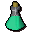

Snape grass
| Config name | snape_grass |
| Item id | 231 |
| Value | 10 gp |
| Weight | 7g |
| Members | Yes |
| Tradeable | Yes |
| Stackable | No |
| Defined in | scripts/skill_herblore/configs/brewing/potions_additives.obj |
Snape grass
Strange spikey grass.
Show 3 ground spawns on the world map → Open in knowledge graph →
Used to make
| Skill | Level | XP | Ingredients | Tool | How | Where | Makes |
|---|---|---|---|---|---|---|---|
| Cooking | 1 | use on item | |||||
| Herblore | 38 | 87.5 | use on item |  Prayer potion(3)members | |||
| Herblore | 50 | 112.5 | use on item | members |
Dropped by
| NPC | Level | Quantity | Rarity | Via | Notes |
|---|---|---|---|---|---|
| 32 | 1 | 10/69 (14.49%) | |||
| 13 | 1 | 1/128 (0.78%) | |||
| 37 | 1 | 1/128 (0.78%) | |||
| 70 | 1 | 1/128 (0.78%) | |||
| 24 | 1 | 1/256 (0.39%) | |||
| 24 | 1 | 1/256 (0.39%) | |||
| 24 | 1 | 1/256 (0.39%) | |||
| 24 | 1 | 1/256 (0.39%) | |||
| 24 | 1 | 1/256 (0.39%) | |||
| 24 | 1 | 1/256 (0.39%) |
Ground spawns
| Area | Coordinates | Level | Count | Map |
|---|---|---|---|---|
| Make Over Mage | 2906, 3297 | 0 | 1 | view |
| Make Over Mage | 2907, 3295 | 0 | 1 | view |
| Make Over Mage | 2917, 3274 | 0 | 1 | view |
Referenced in scripts
scripts/_test/scripts/cheats/cheat_bank.rs2scripts/areas/area_canifis/scripts/canafis_citizen.rs2scripts/drop tables/scripts/chaos_druid.rs2scripts/drop tables/scripts/chaos_druid_warrior.rs2scripts/drop tables/scripts/salarin_the_twisted.rs2scripts/drop tables/scripts/tribesman.rs2scripts/skill_cooking/scripts/cooking_inv/scripts/cakes/cakes.rs2